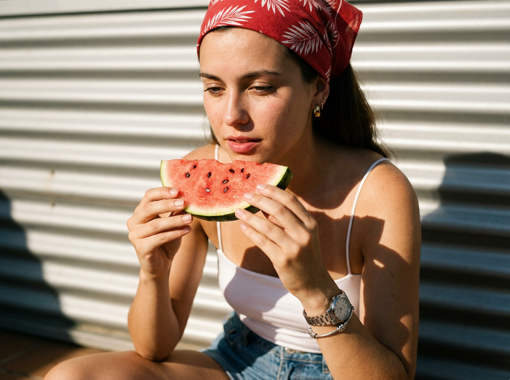
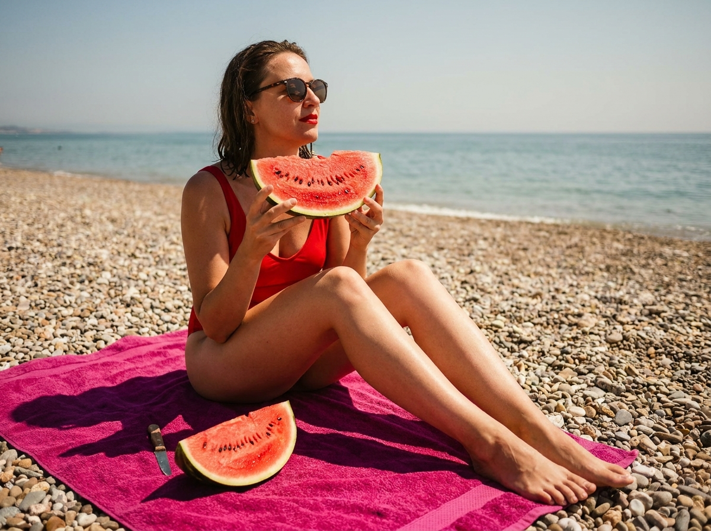
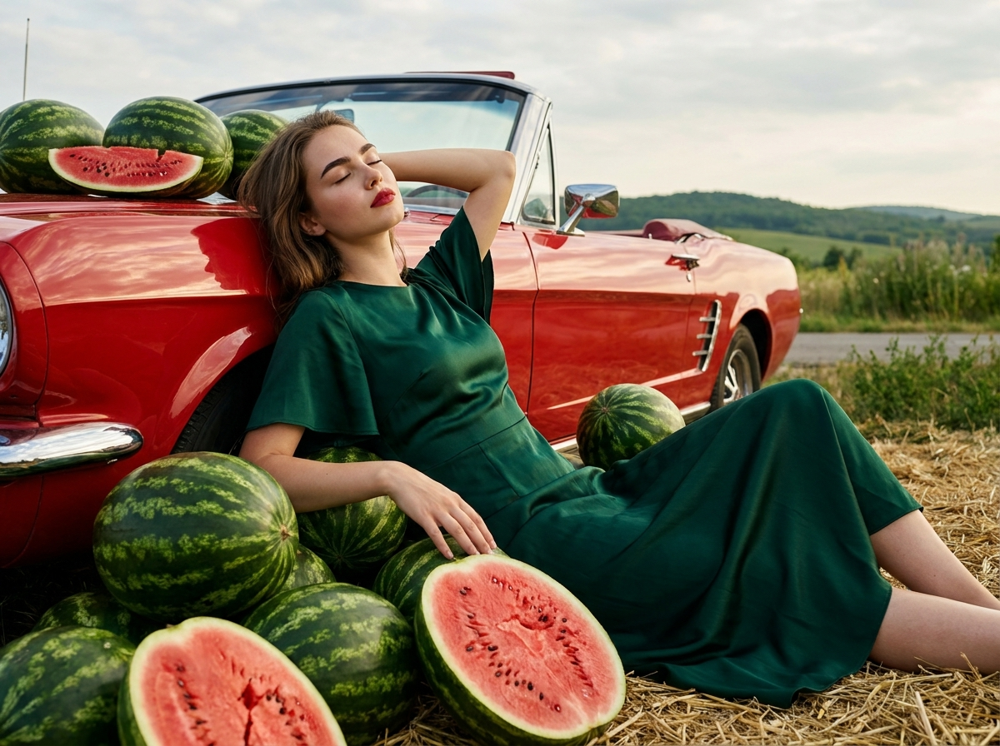
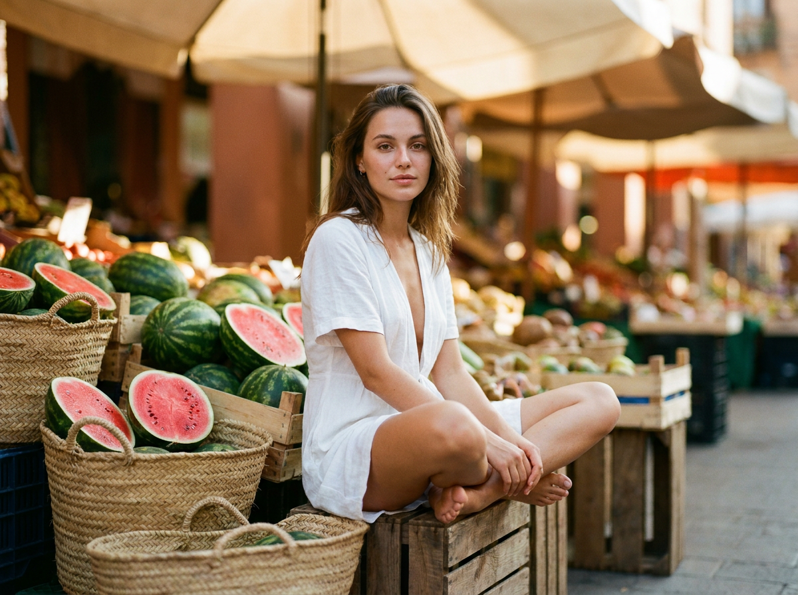
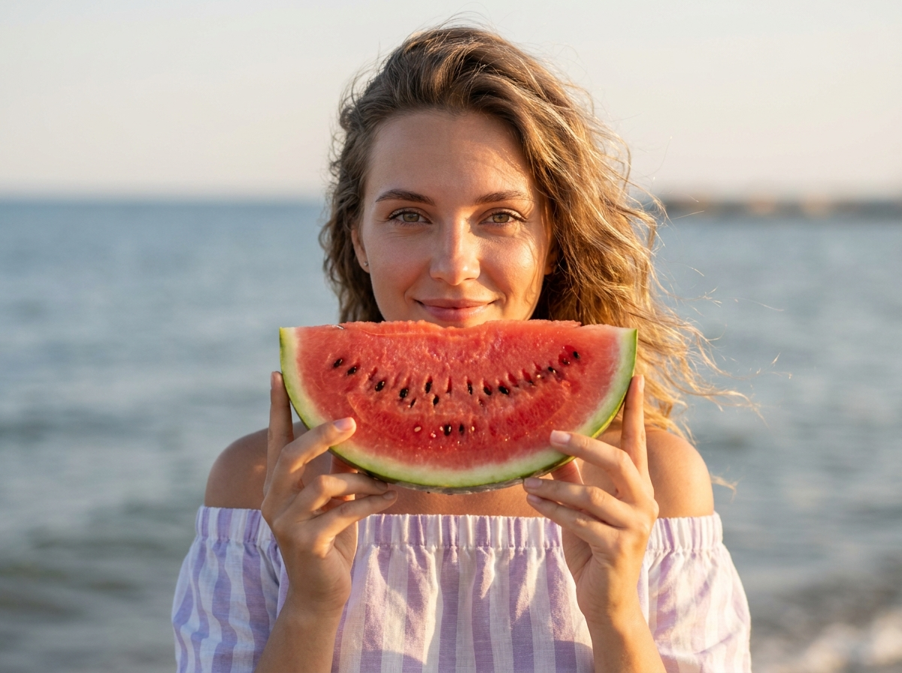
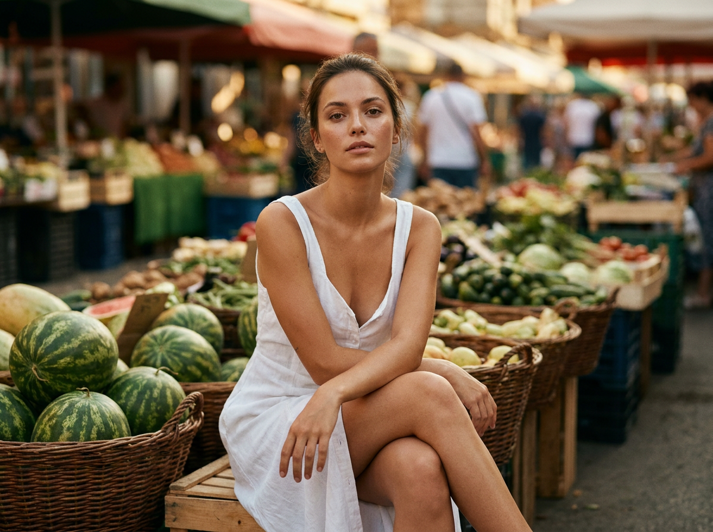
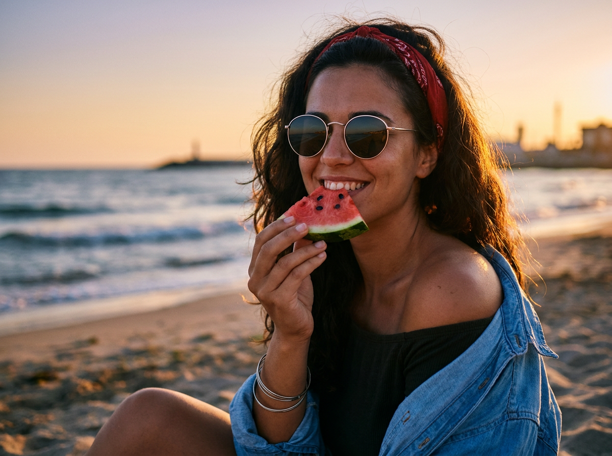
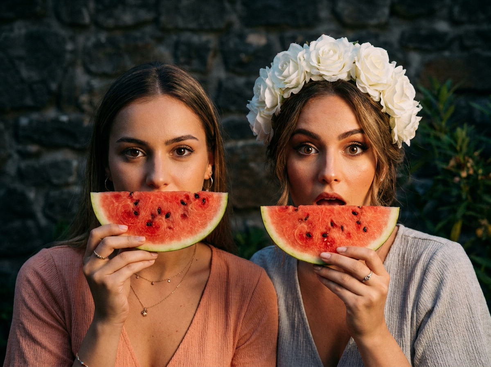
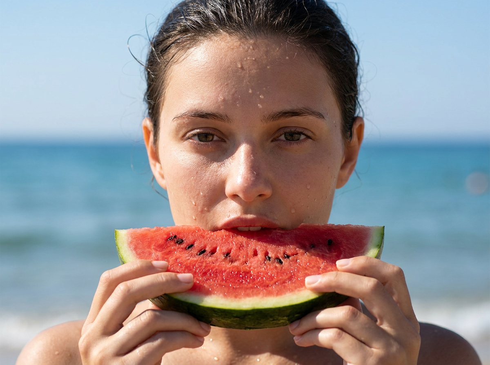
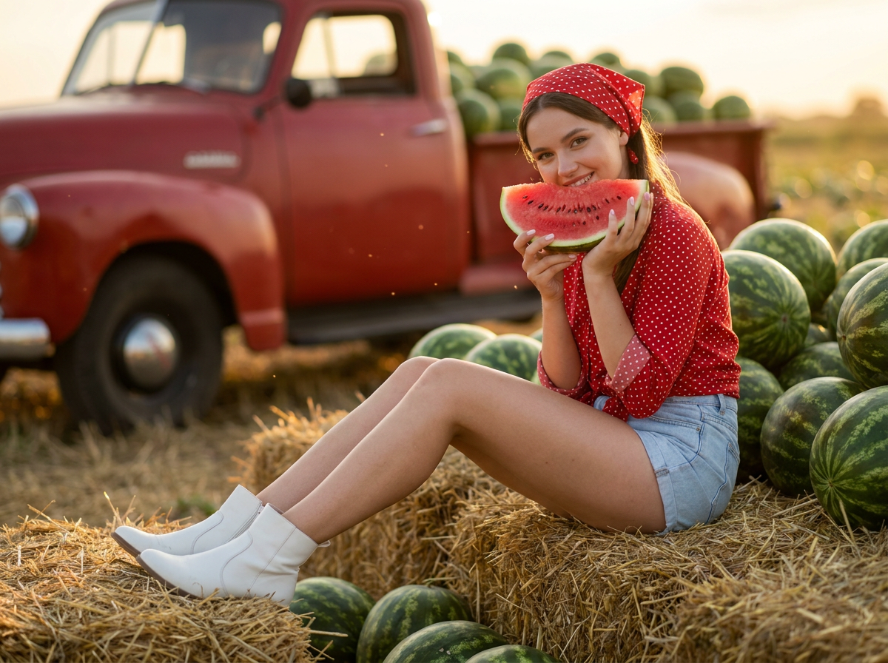

ИИ-фото с арбузами: 10 промптов для нейросети

Летний кадр с арбузом легко испортить: лицо становится непохожим на референс, мякоть выглядит пластиковой, а солнечный свет превращает сцену в пересвеченную открытку. Генерация помогает быстро собрать нужную атмосферу и протестировать разные ракурсы без фотосессии, реквизита и подходящей погоды.
Внутри — 10 готовых сценариев для ИИ-фото: от крупного портрета с ломтиком у губ до пляжных, рыночных и фермерских сюжетов. Есть мягкий golden hour, жёсткое полуденное солнце, плёночная стилизация, ретро-автомобиль и парный праздничный портрет.
Как сгенерировать такое фото: пошагово
Нужен снимок анфас при ровном свете, лицо в кадре целиком, без тёмных очков и головных уборов. Разрешение от 1000 пикселей по короткой стороне. Чем чётче исходник, тем точнее модель повторит черты.
Выберите сценарий ниже и нажмите «Копировать» — текст уйдёт в буфер целиком, вместе с командой сохранения внешности. Эта команда стоит первой строкой и отвечает за то, чтобы на выходе было ваше лицо, а не случайное.
Кнопка «Сгенерировать» рядом с каждым промптом открывает модель в новой вкладке. Nano Banana Pro работает с референсом лица — в отличие от моделей, которые генерируют портрет с нуля и узнаваемость теряют.
Промпт — в поле ввода, портрет — через загрузку референса. Порядок значения не имеет, но без референса команда сохранения внешности работать не будет: модели нечего сохранять.
Для сторис и ленты берите 9:16, для превью и обложек — 4:3. Первый результат редко идеален: если поза или свет ушли не туда, поправьте соответствующую часть промпта и запустите заново. Обычно хватает двух-трёх итераций.
10 промптов для генерации
1. Арбуз на летней веранде
Фотореалистичный летний портрет девушки на открытой веранде или террасе в солнечный дневной полдень. Сохранить внешность по загруженному референсу: индивидуальные черты, пропорции лица, форму глаз, бровей, носа и губ, овал, естественную мимику. Девушка сидит у стены из металлического гофрированного материала с горизонтальными рёбрами, согнув ноги и опираясь на лавочку или другую поверхность. Вертикальная композиция, камера на уровне глаз или немного выше, medium close-up. Героиня занимает правую и центральную часть кадра; лицо расположено ближе к нижнему центру, руки и ломтик арбуза становятся главным акцентом. Она подносит сочный кусок ко рту. На фоне — размытые детали улицы или интерьера и ритм гофрированных линий. Тёплый кинематографичный вид, натуральные солнечные тени, реалистичная кожа, фактура мякоти, вертикальный portrait-кадр.
2. Пляжный пикник с арбузом

Фотореалистичная летняя lifestyle-сцена на берегу моря в эстетике рекламной съёмки. Молодая женщина сидит на ярком фуксиево-розовом полотенце, разложенном на галечном пляже; ткань должна иметь заметное плетение, складки и естественные заломы. Девушка развёрнута вправо в профиль или мягкий полуоборот, поза расслабленная. Рядом находится крупный ломтик арбуза с насыщенной красной мякотью и реалистичной влажной фактурой. В кадре видны отдельные морские камни разных оттенков, линия воды, небольшие волны и горизонт, растворяющийся в лёгкой воздушной дымке. Небо ясное, свет яркий, тени жёсткие и правдоподобные. Сохранить внешность по загруженному референсу, детально передать кожу и волосы. Цветокоррекция кинематографичная: тёплая кожа, насыщенная фуксия полотенца, естественные зелёно-голубые оттенки моря, высокая детализация.
3. Арбузы и красный кабриолет

Строго сохранить внешность по загруженному референсу: черты лица, пропорции, мимику и текстуру кожи без изменений. Фотореалистичная летняя рекламная сцена в editorial- и cinematic-стилистике. На открытом участке у дороги сидит молодая девушка, чья внешность точно соответствует загруженному референсу: без изменения черт лица, пропорций, формы глаз, носа, губ и овала. Вокруг неё и частично под моделью лежит много целых арбузов с тёмно-зелёной коркой и пятнистыми полосами. Среди них — несколько разрезанных плодов: сочная красная мякоть, чёрные семечки, влажные блики на срезах. Рядом припаркован красный ретро-автомобиль с характерным классическим кузовом; лак отражает мягкий рассеянный свет. В нижней части кадра разбросана сухая солома с отдельными коричневыми стеблями. На заднем плане — зелёная растительность, далёкие холмы и мягкое пасмурное небо с тонкими облаками. Добавить лёгкую глянцевую постобработку, но сохранить реализм кожи, металла, соломы и фруктов, насыщенные цвета и высокую детализацию.
4. Портрет у арбузного рынка

Строго сохранить внешность по загруженному референсу: черты лица, пропорции, мимику и текстуру кожи без изменений. Вертикальная фотореалистичная фотография молодой женщины в лёгком белом открытом платье. Она сидит, скрестив ноги, на деревянном ящике перед уличным овощным рынком и смотрит прямо в объектив. Вокруг — корзины с большим количеством арбузов, часть плодов разрезана, хорошо видны сочная мякоть, корка и семечки. Свет натуральный, тёплый, фон уходит в мягкое боке. Использовать тёплую обработку в земляных оттенках, насыщенные цвета, реалистичную фактуру ткани и фруктов, детальную кожу и естественный макияж. Поза непринуждённая, выражение спокойное. Съёмка с низкой точки на объектив 50 мм, f/2.8, ISO 200, выдержка 1/250 с; резкость точно по глазам. Добавить лёгкое плёночное зерно без потери деталей, мягко отделить героиню от рыночного фона и сохранить рекламное качество изображения.
5. Ломтик закрывает лицо

Строго сохранить внешность по загруженному референсу: черты лица, пропорции, мимику и текстуру кожи без изменений. Фотореалистичный летний портрет молодой женщины на морском берегу, вертикальный medium close-up или close-up. Она стоит по центру, камера находится примерно на уровне глаз, немного фронтально и сбоку. Девушка держит большой ломтик арбуза так, чтобы он закрывал часть лица — примерно одну половину щеки и носа, тогда как второй глаз и остальная часть лица остаются открытыми. Она смотрит прямо в объектив и слегка улыбается. Арбуз должен выглядеть свежим: ярко-красная мякоть, чёрные семечки, влажный срез и натуральная зелёно-белая корка. Волосы слегка растрёпаны ветром, отдельные пряди движутся у лица. Сохранить черты по загруженному референсу, естественную мимику и пропорции. Мягкий дневной свет с возможным оттенком golden hour, тёплая кожа, свежая морская атмосфера, кинематографичная цветопередача и реалистичная детализация.
6. Белое платье на рынке

Строго сохранить внешность по загруженному референсу: черты лица, пропорции, мимику и текстуру кожи без изменений. Фотореалистичный вертикальный портрет молодой женщины в лёгком белом открытом платье. Она сидит на деревянном ящике перед уличным овощным рынком, ноги перекрещены, плечи расслаблены, взгляд направлен в камеру. Вокруг расположены корзины с арбузами; показать много целых плодов с естественной полосатой коркой и реалистичную фактуру поверхности. На заднем плане — мягкое боке, тёплый натуральный свет и рыночные детали без лишней резкости. Использовать тёплую тональную обработку в земляной гамме, контрастную детализированную кожу, аккуратный естественный макияж и насыщенные, но правдоподобные цвета. Ракурс снизу, объектив 50 мм, f/2.8, ISO 200, выдержка 1/250 с, фокус на глазах. Добавить лёгкую плёночную зернистость, сохранить текстуру белой ткани, дерева и арбузной корки. Кадр должен выглядеть как профессиональная летняя фотография.
7. Арбуз на золотом закате

Фотореалистичный портрет девушки на морском берегу во время golden hour. Она сидит или полусидит, колени согнуты, поза естественная и расслабленная; камера на уровне глаз, medium shot с акцентом на лицо и верх тела. Героиня широко улыбается и смотрит прямо в объектив. В руках у неё небольшой ломтик арбуза с ярко-красной мякотью и чёрными семечками; она держит его у груди или на уровне щёк, частично прикрывая нижнюю часть лица. На срезе заметны сочная текстура, влажный блеск и лёгкое подсыхание сока. На девушке тёмный чёрный сарафан или топ с открытым плечом, рядом свободно накинута светлая голубая или джинсовая рубашка, слегка развевающаяся на ветру. На голове красная бандана или лента. Сохранить внешность по референсу, мягкий закатный свет, тёплую кожу, кинематографичную цветопередачу и морскую атмосферу.
8. Праздничный дуэт с арбузом

Строго сохранить внешность по загруженному референсу: черты лица, пропорции, мимику и текстуру кожи без изменений. Фотореалистичный свадебно-праздничный портрет двух девушек на природе или во дворе вечером. Они стоят очень близко к камере, в кадре по плечи и головы, лица почти заполняют композицию. Внешность обеих точно повторяет загруженные референсы, без изменения индивидуальных черт и пропорций. На переднем плане находятся два главных объекта — лица девушек и арбузные ломтики; показать яркую мякоть, корку и влажный срез. Съёмка проходит рядом с тёмной фактурной каменной стеной, сбоку видна зелёная растительность. В верхней части кадра заметны белые цветы или венок в волосах одной из девушек. Свет атмосферный, вечерний: мягкая подсветка, оттенок заката, деликатный контраст и неглубокие тени. Добавить тёплый кинематографичный цветокор и лёгкую плёночность, сохранив натуральную кожу, фактуру камня, ткани и арбуза. Камера фронтальная, композиция тесная и эмоциональная.
9. Мокрый портрет на пляже

Фотореалистичный close-up молодой женщины на пляже, фронтальная композиция, лицо по центру, в кадре голова и плечи. Она держит толстый ломтик арбуза прямо перед губами: ярко-красная мякоть, чёрные семечки, бело-зелёная корка снизу. Выражение спокойное, чуть задумчивое; губы слегка приоткрыты, взгляд направлен в объектив. На коже лица и шее много капель воды, сока или росы, часть капель стекает вниз, создавая реалистичный мокрый эффект. Кожа естественная, слегка блестит под солнцем. Волосы убраны назад, у лба лежат немного влажные пряди. Свет яркий, дневной, ощущение жаркого летнего полудня; на волосах и коже заметны солнечные блики, тени и микроконтраст правдоподобные. Сохранить внешность по загруженному референсу, натуральную текстуру кожи и высокую детализацию арбузного среза.
10. Фермерский пикник с арбузами

Фотореалистичный летний рекламный кадр на ферме или пикнике. Молодая женщина сидит на охапке соломы на переднем плане, корпус немного развёрнут к камере, лицо повернуто в объектив. Она улыбается, выглядит дружелюбно и игриво; взгляд живой. На ней аккуратный макияж с чёткими бровями, выразительными глазами и яркой красной помадой. Волосы растрёпаны ветром, выбившиеся пряди двигаются, сверху повязана красная бандана или лента в белый горошек. Вокруг расположены целые арбузы и разрезанные плоды, нужно передать сочный красный цвет мякоти, зелёную корку и натуральные блики. Свет мягкий вечерний, golden hour, с тёплой контровой подсветкой. Использовать кинематографичный колорит, насыщенное сочетание красного и зелёного, лёгкую глубину резкости и фокус одновременно на лице и ближайшем арбузе. Сохранить внешность по референсу, натуральную фактуру соломы и рекламное качество изображения.
Что важно учесть в этом стиле
Арбуз в кадре — не просто реквизит, а цветовой центр композиции. Красная мякоть лучше работает рядом с зелёной коркой, белой одеждой, голубой рубашкой или розовым полотенцем. Указывайте, где именно находится плод: у губ, перед щекой, на уровне груди или на переднем плане.
Для реализма описывайте не только локацию, но и физику света: жёсткие тени в полдень, мягкий контровик на закате, блики на соке, влажные капли на коже. Если нужен рекламный кадр, добавьте фокус, глубину резкости, объектив и характер обработки.
Идеи для вариаций
- Замените пляж на бассейн с полосатым шезлонгом и тенью от навеса.
- Добавьте прозрачный кувшин с арбузным лимонадом и кубиками льда.
- Сделайте кадр сверху: девушка лежит на полотенце, а дольки образуют графичный круг.
- Перенесите сцену на ночной рынок с гирляндами и неоновыми вывесками.
- Попросите нейросеть стилизовать фото под плёночный снимок 1990-х с лёгким зерном.
Как собрать свой промпт
Начните с типа изображения и героя: портрет, рекламная съёмка или lifestyle-кадр. Затем задайте действие с арбузом, позу, одежду и точное положение камеры. После этого опишите фон, время суток, источник света и цветовую палитру.
В финале добавьте технические параметры: вертикальный формат 4:5 или 2:3, объектив 50 мм, диафрагму f/2.8, фокус на глазах и нужный уровень детализации. Для работы с референсом отдельно попросите не менять черты лица. Сгенерируйте 4–8 вариантов и меняйте за один раз только один параметр.
Ошибки, из-за которых кадр не получается
- Слишком общий свет. Формулировка «красивое лето» не объясняет, откуда падают тени и где появятся блики.
- Непонятное положение арбуза. Укажите размер ломтика и часть лица или тела, которую он закрывает.
- Перегруженный фон. Большое количество объектов конкурирует с лицом; оставляйте один главный сюжетный акцент.
- Пластиковая мякоть. Добавьте семечки, влажный срез, сок и неровную фактуру, а не только слова «сочный арбуз».
- Потеря сходства. Используйте референс, короткое описание внешности и несколько попыток с одинаковой композицией.
Частые вопросы
Как сделать такое ИИ-фото бесплатно?
Попробуйте Kandinsky и Шедеврум: они подходят для текстовой генерации, но качество лиц и точность сложной позы могут заметно плавать. Krea AI и Arena.ai удобны для экспериментов и сравнения вариантов, однако бесплатный доступ обычно ограничен числом генераций, скоростью или разрешением. Работа с референсом поддерживается не одинаково: где-то можно загрузить изображение, а где-то придётся подробно описывать внешность текстом. Для похожего лица закладывайте 4–8 попыток и проверяйте результат крупным планом.
Как сохранить сходство с человеком на референсе?
Загрузите качественный снимок лица без сильного фильтра, очков и перекрывающих предметов. В промпте укажите, что нужно сохранить форму глаз, носа, губ, овал и естественную мимику. Не меняйте одновременно причёску, возраст, ракурс и освещение: большое число новых условий снижает точность.
Какой формат выбрать для фото с арбузом?
Для портрета и публикации в соцсетях подойдёт вертикальный формат 4:5 или 2:3. Для крупного лица используйте 3:4, а для сцены с машиной, пляжем или рынком — 16:9. Если сервис позволяет, генерируйте сразу в высоком разрешении и отдельно проверяйте руки, зубы и семечки.
Как сделать арбуз реалистичным?
Опишите конкретные признаки: красная мякоть с неровным срезом, чёрные или коричневые семечки, белый слой у корки, влажный блеск и капли сока. Добавьте направление света и тень от ломтика. Если фрукт получается слишком идеальным, попросите естественные неровности, небольшие потёки и видимую текстуру корки.